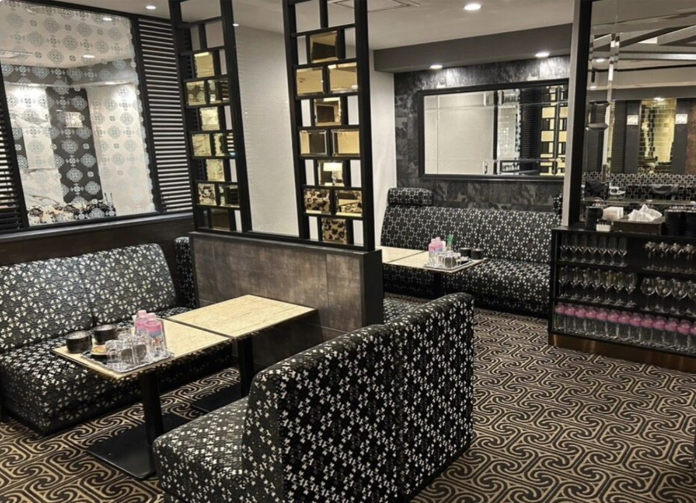
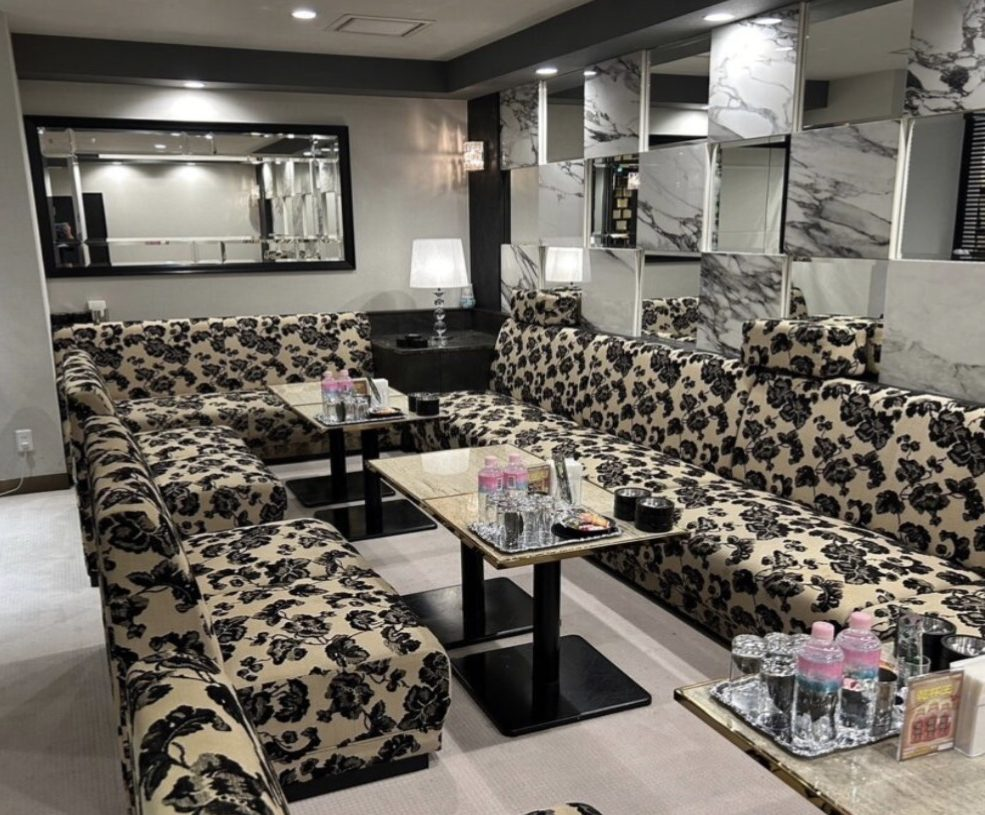
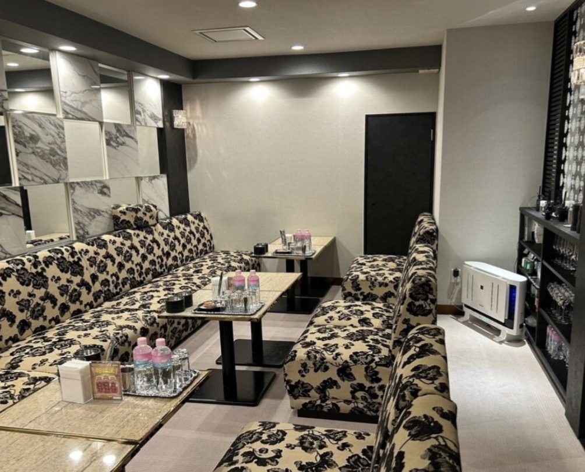
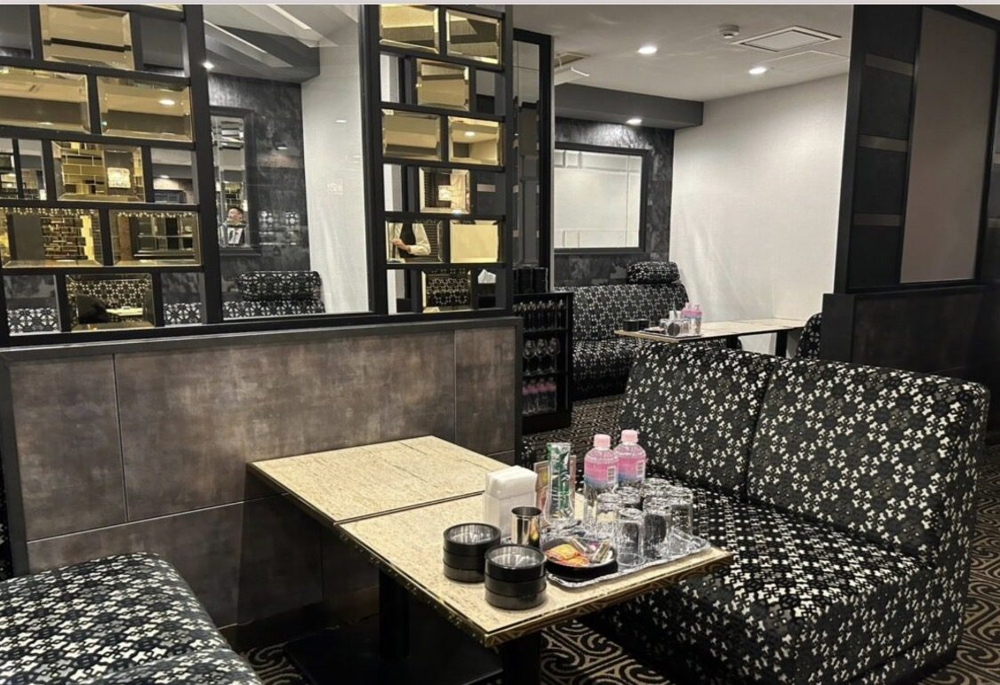

キャバクラが合わなかった人へ。ミナミのクラブ「CLUB CROSS」で働くってどんな感じ？
Area 編集部

「にぎやかなキャバクラは少し疲れた」「もう一度、夜のお仕事をしてみたい」。そんな方に知ってほしいのが、心斎橋・東心斎橋のCLUB CROSS（クラブ クロス）です。2014年から続く大型店で、ベテランのママ6名がそばで教えてくれます。
クラブとキャバクラ、なにがちがう？
CLUB CROSSは口座制のクラブ。お客様ごとに担当が決まっていて、ママのお客様が多いのが特徴です。指名を取り合うよりも、席の雰囲気をみんなでつくる働き方に近く、会話をゆっくり楽しめます。
お客様は40代〜60代の会社役員の方が中心。在籍している女の子の平均年齢は30歳前後で、落ち着いた大人の接客が好きな方に向いています。



お金のこと
| 時給 | 4,000円〜（在籍の平均は5,000円）。売上で上がり、入店時の時給から下がりません |
|---|---|
| 体験入店 | 時給3,000円（どなたも同じ） |
| バック | 同伴2,000円／本指名2,000円 |
| 給料日 | 20日締め・翌月10日払い（手渡し）。日払いは相談できます |
| ノルマ | あり（くわしくは面接で確認） |
掛け持ちしやすい働き方
出勤は週2日から。在籍している女の子の6〜7割が昼のお仕事や学校と掛け持ちしています。毎回でなければ終電での上がりもでき、「平日は終電まで、休みの前日だけラストまで」という働き方も相談できます。
| 17:00〜 | 面接（体験入店の日はそのまま出勤） |
|---|---|
| 〜20:00 | お店の近くのセットサロンでヘアメイク（1,500円ほど） |
| 20:00〜21:00 | 出勤。ドレスは無料で借りられます |
| 終電 | 終電で上がる日も相談OK |
| 1:00 | 閉店。送りあり（大阪市内1,000円／市外2,000円） |
どんな人に向いている？
- キャバクラのにぎやかさが少し合わなかった
- ブランクがあって、もう一度ちゃんと教わりながら始めたい
- 昼のお仕事と両立しながら、週2日くらいで働きたい
- 落ち着いた大人のお客様と、ゆっくり話すのが好き
応募は20歳以上から。金髪など明るすぎる髪色や、隠せない場所のタトゥーはNGです。
応募から体験入店まで
- 「クロス」とひと言送って、面接の日を決める
- 顔写真付きの身分証明書を持ってお店へ（面接は17時から）
- 時給・バック・決まりごとを直接聞く。社長にも相談できます
- その日のうちに体験入店もOK
募集要項・応募方法は求人ページにまとめています。
CLUB CROSSの求人を見る※この記事は、お店の求人情報をもとにArea編集部がまとめたものです（2026年11月10日時点）。時給・ノルマ・送りなどの条件は変わることがあるので、面接のときに必ずお店へ確認してください。Areaは求人情報を掲載する広告媒体で、応募はお店へ直接届きます。